Mes projets
Forest Quest - Programmation Fonctionelle Avancée (Ocaml)
voir le sujet
voir mon projet
Images et détails du projet
En binôme avec Fabio ALVES
GeometryDash-Like. On y joue un petit bonhomme qui doit avancer dans plusieurs niveaux
à travers la jungle,
tout en esquivant les pièges (piques, trous, saut mal calculé...).
Menu de selection des niveaux, animation du personnage et des décors.
Implémentation de musiques et de sons.
note: 19/20
Être ou ne pas être ? - Science des données (Python)
voir le sujet + rapport
telecharger mon projet
Images et détails du projet
En trinôme avec Nassim ARIFETTE et Justin MOUA
Comment prédire la survie d'un patient pendant son séjour à l'hôpital compte tenu de son dossier
médical ?
Le personnel soignant collecte de nombreuses informations sur les patients qui sont très utiles
pour surveiller l'état de santé, diagnostiquer et choisir les traitements.
Elles peuvent également être utilisées pour l'analyse statistique prédictive.
note: 19,5/20
Calendrier collaboratif - Programmation Web (HTML,CSS, PHP, JS)
voir le sujet
voir mon projet
voir mon rapport
Images et détails du projet
Projet de l'option ProgWeb du second semestre de L3 Info. L'objectif est de coder un
calendrier collaboratif accessible par plusieurs utilisateurs.
Quelques fonctionnalités : page de connexion/inscription, bouton de deconnexion, navigation à
travers les semaines du calendrier, creation/modification de cours, un espace commentaire pour
chaque cours, etc
note: 14,5/20
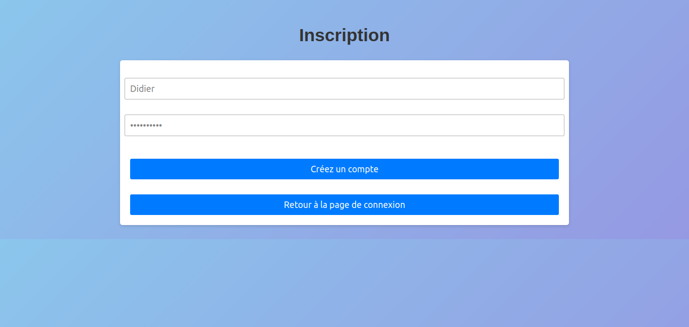 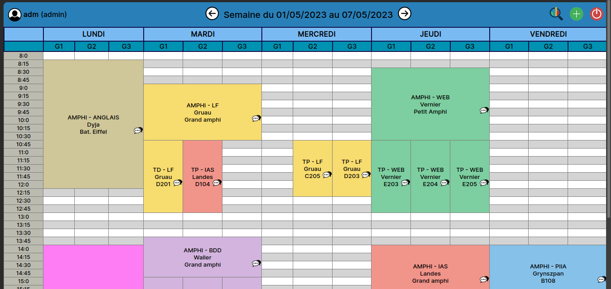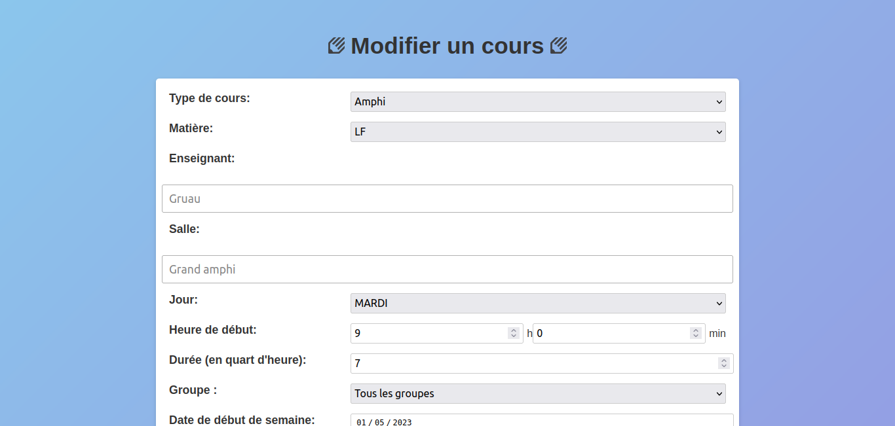 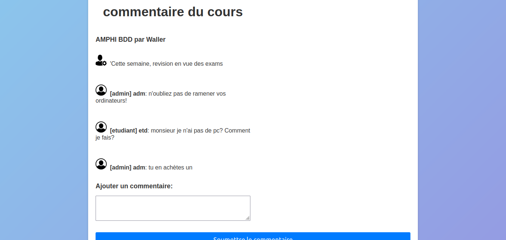
Application de dessin - Programmation Interfaces Interactives Avancées (Java)
voir le sujet
voir mon projet
voir mon rapport
Images et détails du projet
En binôme avec Thibaut GUERIN
L'objectif est de créer une application de dessin facile à utiliser pour tous les
niveaux d'utilisateurs, avec une interface utilisateur intuitive et bien conçue.
Les fonctions principales telles que le dessin de formes géométriques
pleines, le déplacement des formes, le changement de couleurs, le redimensionnement et le
positionnement des formes au premier plan ou au dernier plan seront implentées.
Utilisation de SceneBuilder pour l'interface graphique.
note: 14,1/20
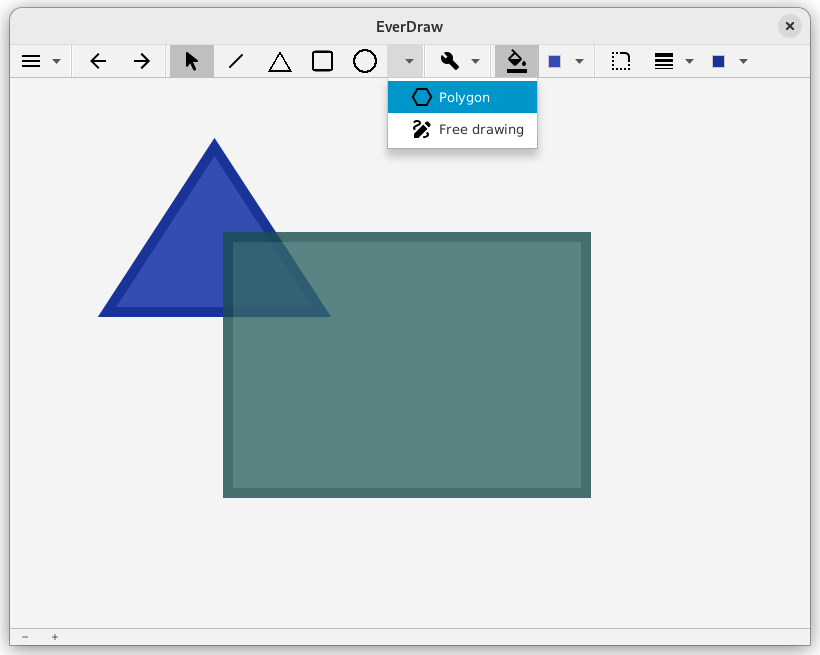 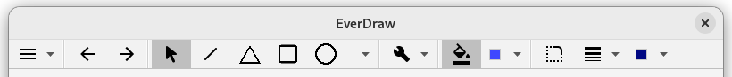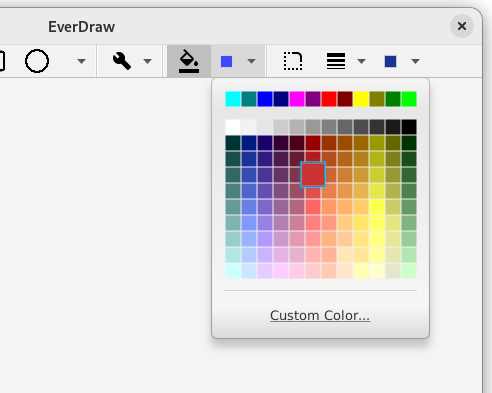 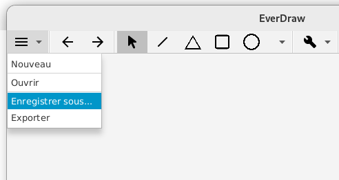
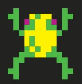 Frogger - Introduction Programmation Orientée (Java)
voir le sujet
voir mon projet
voir mon rapport
Images et détails du projet
En binôme avec Nassim ARIFETTE
Adapatation du jeu d'arcade Frogger. Une petite grenouille doit avancer le plus loin
possible,
tout en prenant gare aux nombreux dangers...
Implémentation de différentes possibilité de
Game Over: noyade et prédateur.
Partie chronométrée avec affichage du score à la fin. Implémentation de sons.
note: 16/20
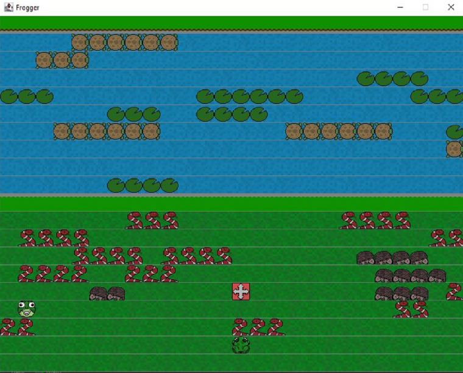
L'île interdite - Programmation Orientée et Génie Logiciel (Java)
voir le sujet
voir mon projet
voir mon rapport
Images et détails du projet
En binôme avec Nassim ARIFETTE
Adaptation du jeu de société éponyme de Matt Leacock. Une équipe de 4 aventuriers arrivent sur une île déserte. Ils doivent s'entraider afin de trouver tous les mysterieux artefacts que renferme ce lieu et s'échapper par helicoptère au plus vite. Cependant le temps joue contre eux: l'eau monte et les dangers sont nombreux...
note: 20/20
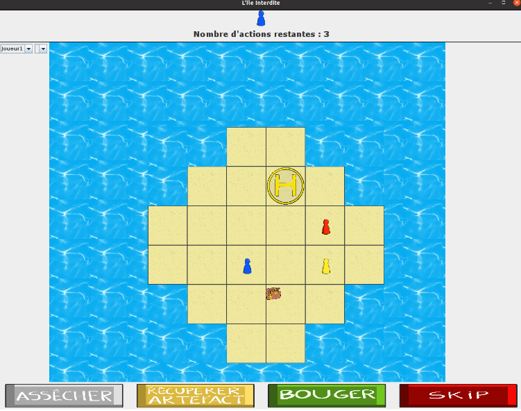
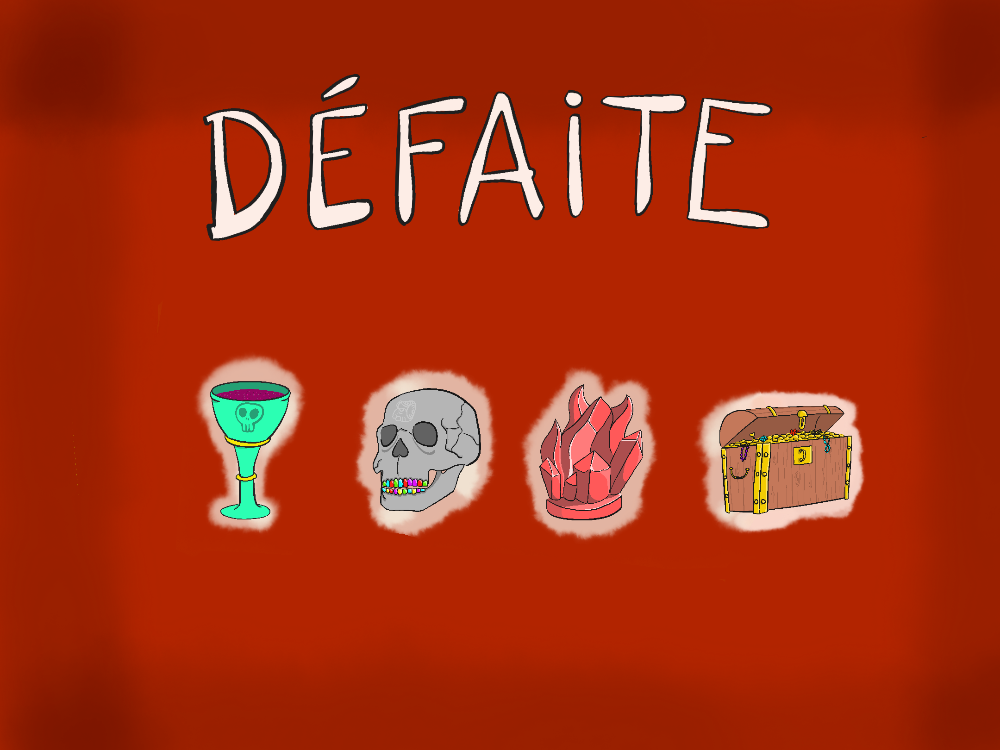 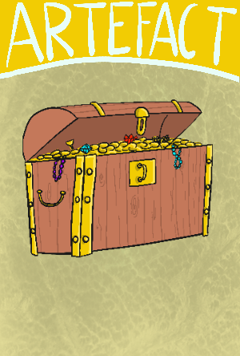